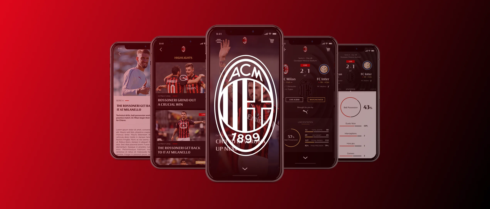

Art Direction · 2015
Case 08 / 08
AC Milan 2015
First digital overhaul for AC Milan: designing the club's first official app and web platform from scratch, a foundation that held for a decade.
Deliverables
Client
AC Milan
Year
2015
Role
Art Director

01Brief
Laying the digital foundation for a legendary club.
In 2015, AC Milan, one of the most decorated clubs in European football, had no official mobile app and a website that hadn't been meaningfully updated in years. For a club with a global fanbase of over 400 million, the digital gap was significant. They needed to go from zero to a full digital presence, built from scratch.
02Challenge
The challenge: design both a responsive website and a native app from the ground up, establishing a digital visual identity that honoured Milan's iconic red-and-black brand while resonating with a young, global, mobile-first fanbase spread across Europe, Asia, and the Americas.
03Approach
As Art Director, I led the visual direction for both platforms: crafting the design language, establishing the component architecture, and designing core experiences including matchday live, squad profiles, news, and multimedia. This project laid the groundwork for Milan's digital ecosystem and became the foundation I rebuilt a decade later in the 2026 redesign.
04Gallery
Project gallery
Scroll or hover to browse